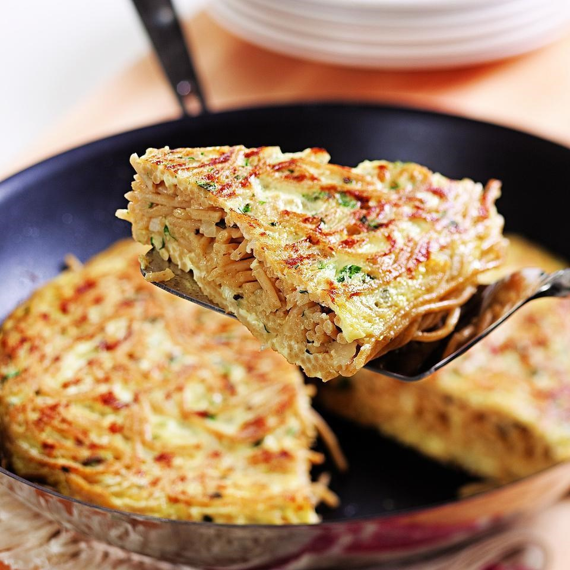

Spaghetti Frittata

Ingredients
Instructions
- Peel and roughly chop the onions, roughly chop 2 carrots and celery sticks, then place them in a large pan with the bay leaves, peppercorns, a pinch of sea salt and the chicken carcass.
- Fill the pan with cold water so that everything is covered, then place on a high heat and bring to the boil. Reduce to a simmer and cook for 1 hour, skimming off any scum that rises to the surface from time to time.
- About 20 minutes before the stock is ready, crack on with the base of the soup: peel the remaining carrots and slice ½cm thick with the remaining celery. Peel and finely slice the garlic and shallots. Pick the parsley leaves, finely chopping the leaves and stalks. Roughly shred the spinach.
- Place the butter and 1 tablespoon of oil in another large pan on a low heat, add the garlic, shallots and parsley stalks and cook for 5 to 10 minutes, or until softened.
- Add the carrots and celery and cook for a further 5 minutes.
- When the stock is ready, remove the chicken carcass, pull off any remaining pieces of meat and leave to one side, then discard the carcass.
- Strain the stock through a sieve into the veg pan. Bring to the boil, then reduce to low and simmer for 20 minutes.
- Add the seasonal greens and cook for a further 10 minutes, adding the spinach for the last minute.
- Finish the soup by squeezing in the lemon juice, then taste and season to perfection, if needed.
- Divide between bowls and top with any leftover shredded chicken, a sprinkling of parsley leaves and a good hit of black pepper.
Comments